Este guia explica cada botão, cada tela e cada função do sistema, com prints reais de cada passo. Ele foi escrito pensando em quem está abrindo o Foccus pela primeira vez e nunca usou um sistema parecido — não é preciso saber nada de informática para seguir.
O Foccus é um arquivo — não é um programa que se instala nem um site que precisa de internet para funcionar. Para usar, basta dar dois cliques no arquivo Foccus.dc.html (ou, se alguém já deixou um atalho pronto pra você, dois cliques nesse atalho). Ele vai abrir sozinho dentro do seu navegador de internet (Chrome, Edge, Firefox — qualquer um serve).
Assim que abrir, o sistema já aparece pronto pra uso, com uma tela parecida com esta:
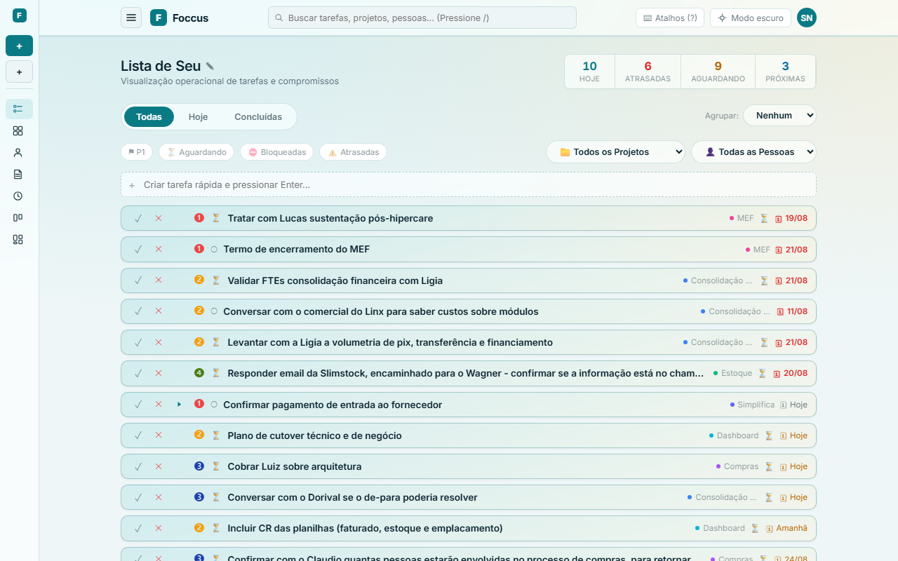
A tela inicial do Foccus: menu à esquerda, cabeçalho no topo, e a lista de tarefas ocupando o centro.
A faixa fixa no topo da tela aparece em qualquer lugar do sistema em que você esteja, e tem sempre os mesmos botões. Da esquerda para a direita:
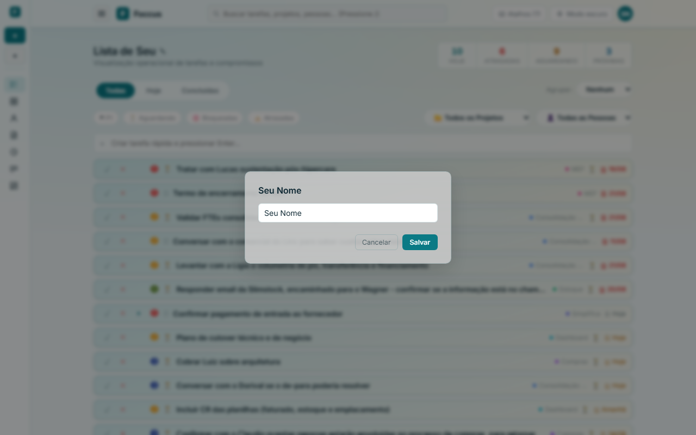
Clicando no círculo com suas iniciais, abre esta janela para você digitar como quer ser chamado.
Para trocar o nome: apague o texto que já está escrito, digite o nome que você quer usar, e clique no botão azul-esverdeado "Salvar". Se desistir, clique em "Cancelar" ou clique em qualquer área cinza-escura fora da janela.
Clicando em "Atalhos (?)", aparece esta lista — é só uma referência rápida, você não precisa decorar nada, pode voltar aqui sempre que quiser:
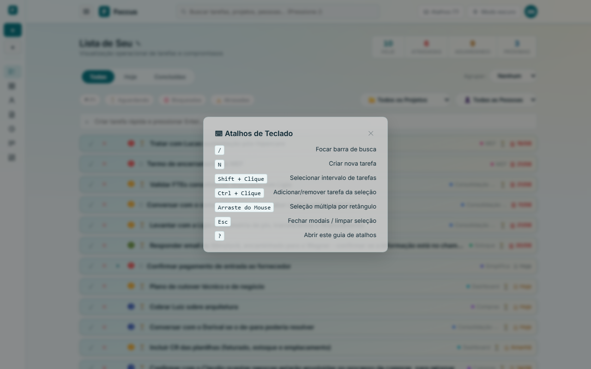
A janela de atalhos — os mesmos atalhos estão detalhados, um por um, na seção 17 deste guia.
Uma linha fininha logo abaixo do cabeçalho, quase imperceptível, muda de tamanho conforme o dia passa — é a barra de eficiência diária: ela mostra visualmente quantas das tarefas com prazo para hoje você já concluiu.
É a primeira coisa que você vê ao abrir o Foccus, e reúne todas as suas tarefas em aberto numa lista só. Vamos por partes, de cima para baixo.
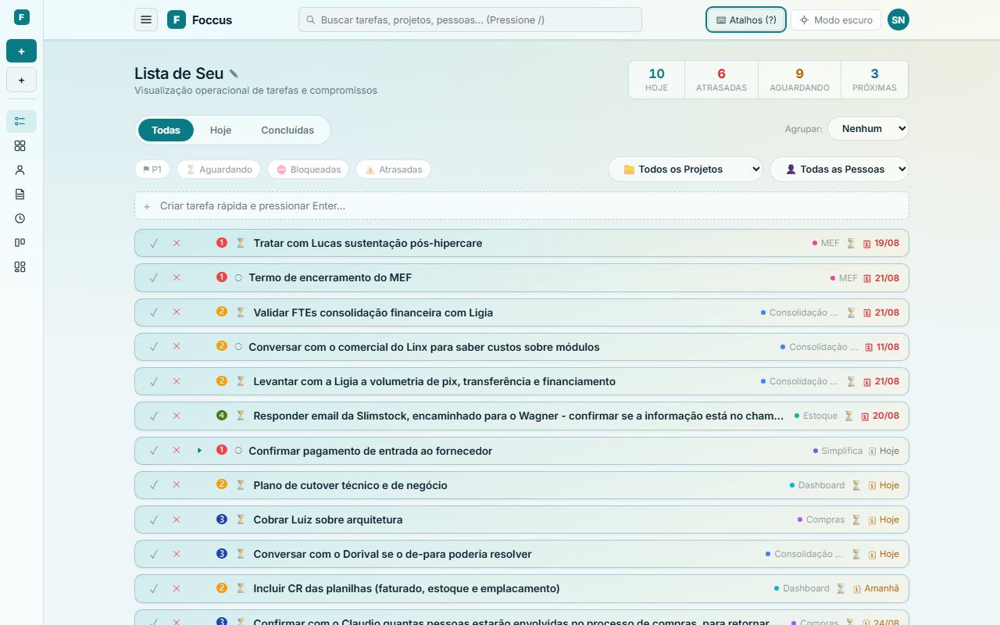
A tela Minha Lista completa.
No canto superior esquerdo da tela, o título mostra "Lista de [seu nome]" — clicando nele (ou no lápis ✎ ao lado), abre a mesma janela de trocar nome explicada na seção 2.
No canto superior direito, quatro cartões mostram números resumidos:
Clicando em qualquer um desses quatro números, a lista abaixo é filtrada automaticamente para mostrar só aquelas tarefas.
Logo abaixo do título, há três abas em formato de pílula:
Clique em uma delas para trocar de visualização — a aba selecionada fica destacada em verde-azulado.
Abaixo das abas, há quatro botões menores: 🏳 P1, ⏳ Aguardando, ⛔ Bloqueadas e ⚠ Atrasadas. Eles funcionam como interruptores — clique em um para ligá-lo (ele fica destacado) e a lista passa a mostrar só as tarefas daquele tipo; clique de novo para desligar. Dá para ligar mais de um ao mesmo tempo, e a lista mostra só as tarefas que se encaixam em todos os filtros ligados.
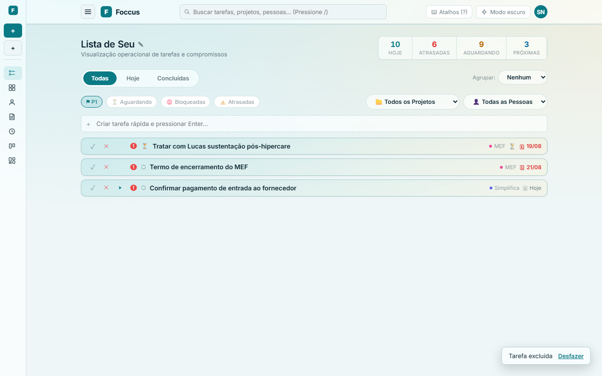
Exemplo: com o filtro "P1" ligado, a lista mostra só as tarefas de prioridade mais urgente. Repare que o balão "Tarefa excluída · Desfazer" no canto inferior direito é o aviso deixado por uma exclusão recente — mais sobre isso na seção 7.
No canto superior direito da área de filtros, há duas caixas de seleção: "📁 Todos os Projetos" e "👤 Todas as Pessoas". Clicando em qualquer uma delas, abre uma lista para você escolher um projeto (ou pessoa) específico — a lista de tarefas passa a mostrar só o que está ligado àquele projeto ou pessoa. Para voltar a ver tudo, escolha a opção "Todos os Projetos" / "Todas as Pessoas" de novo.
No mesmo canto, há a caixa "Agrupar: Nenhum". Clicando nela, você pode escolher agrupar a lista por Projeto, Urgência ou Prazo — em vez de uma lista corrida, as tarefas passam a ficar divididas em blocos com um título em cima de cada bloco (por exemplo, um bloco "Simplifica", outro "MEF", e assim por diante).
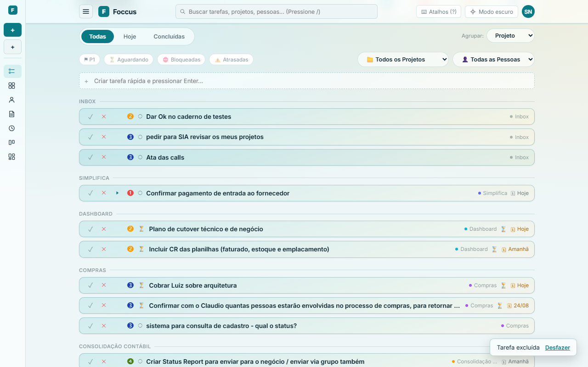
A mesma lista, agora agrupada por Projeto — cada bloco mostra o nome do projeto e as tarefas daquele projeto embaixo.
Logo abaixo dos filtros, há uma caixa de texto tracejada escrito "Criar tarefa rápida e pressionar Enter...". Esse é o jeito mais rápido de anotar algo: clique nela, digite o título da tarefa, e aperte a tecla Enter do teclado. A tarefa é criada na hora, sem prioridade específica e sem projeto vinculado (você pode ajustar isso depois, abrindo o detalhe da tarefa — seção 6).
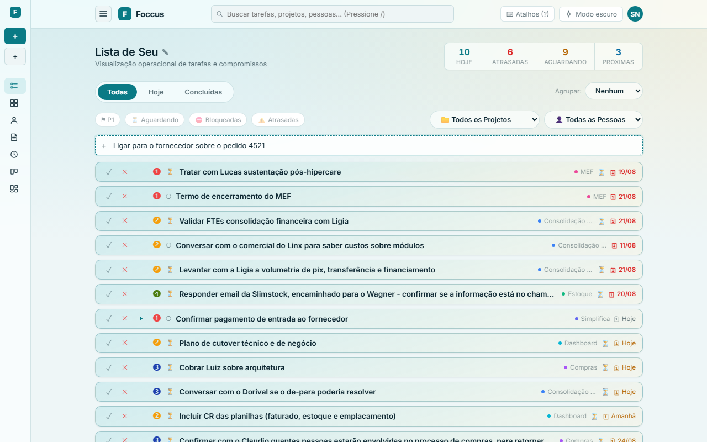
Digite o título e aperte Enter — a tarefa aparece imediatamente no topo da lista.
Cada linha da lista é um "cartão" com várias informações lado a lado. Da esquerda para a direita:
Clicando em qualquer parte vazia da linha (fora dos botões descritos acima), abre o painel de detalhes completo da tarefa — veja a seção 6.
Quando uma tarefa tem uma lista de subtarefas cadastrada (explicado na seção 6), aparece uma seta ▸ do lado esquerdo da linha. Clicando nela, a linha se expande e mostra cada subtarefa com uma caixinha de marcar (checkbox) — clique na caixinha pra marcar aquele item específico como feito, sem precisar concluir a tarefa inteira.
Além da "tarefa rápida" explicada na seção anterior (que só pede o título), existe um formulário completo para criar uma tarefa já com projeto e prioridade definidos. Há três formas de abrir esse formulário:
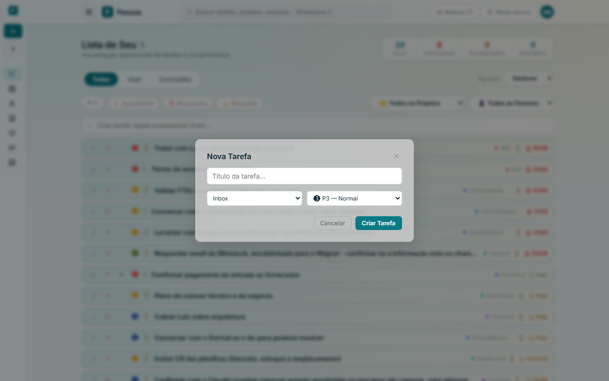
A janela "Nova Tarefa": título, projeto e prioridade.
Preencha:
Depois de preencher, clique no botão verde-azulado "Criar Tarefa". Se desistir, clique em "Cancelar" ou no ✕ no canto superior direito da janela, ou clique em qualquer área escura fora da janela.
Clicando em qualquer parte vazia de uma linha da lista (em Minha Lista, Aguardando, no Kanban ou no detalhe de um Projeto), abre um painel deslizando pelo lado direito da tela, com tudo que dá pra configurar naquela tarefa. É o lugar mais completo do sistema para editar uma tarefa.
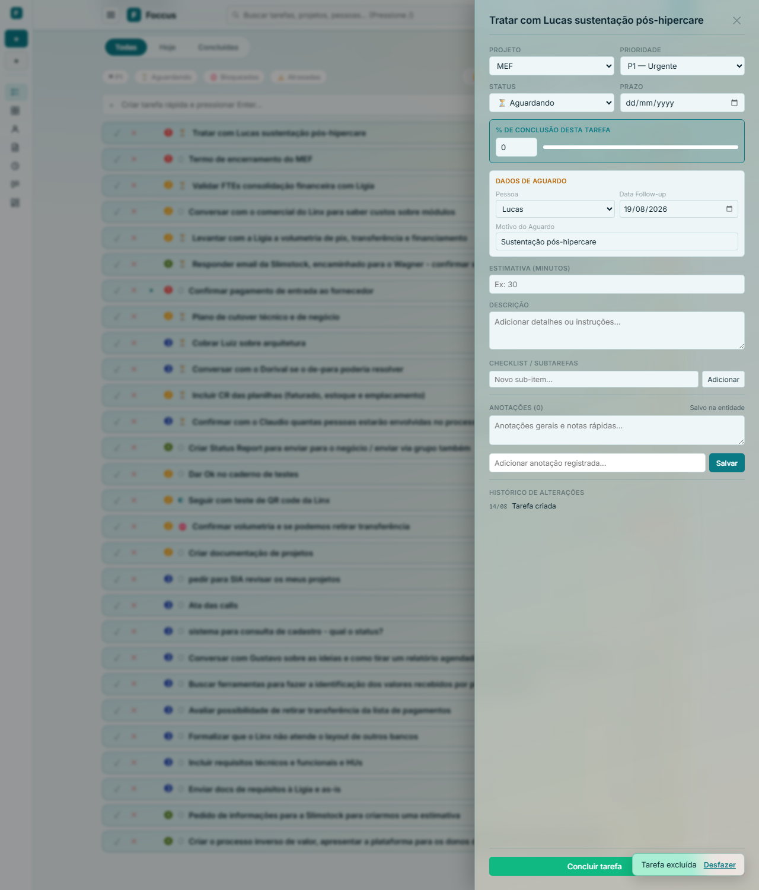
O painel de detalhes, com todos os campos visíveis de uma vez (nesta captura a tela foi alongada só para caber tudo na imagem — no seu computador, role a página para baixo dentro do painel para ver os campos de baixo).
De cima para baixo, os campos são:
Clique na marca de visto (✓) no início de qualquer linha da lista, ou no botão verde "Concluir tarefa" dentro do painel de detalhes. O título da tarefa passa a aparecer riscado, e ela some da aba "Todas" (mas continua visível na aba "Concluídas"). Se clicar de novo no ✓ de uma tarefa já concluída, ela volta ao normal.
Clique no xis vermelho (✕) ao lado do ✓, em qualquer linha, ou no botão "Excluir" dentro do painel de detalhes. A tarefa some da lista imediatamente, sem pedir confirmação — mas não se preocupe: no canto inferior direito da tela aparece um aviso "Tarefa excluída" com um link "Desfazer".
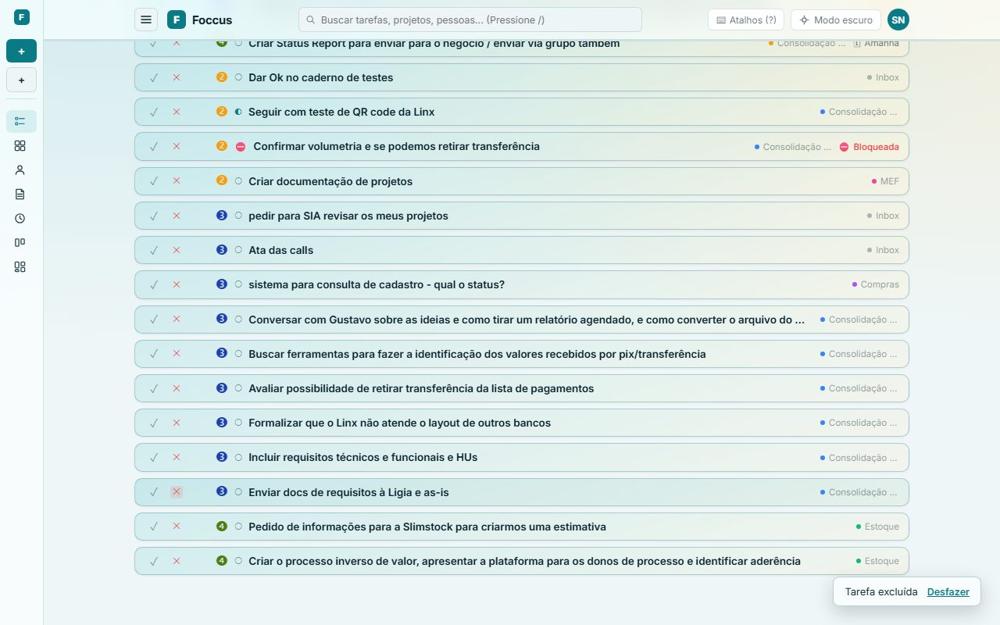
O aviso de exclusão, com a opção de desfazer, no canto inferior direito.
Quando você precisa mudar várias tarefas ao mesmo tempo (por exemplo, mover todas para outro projeto, ou concluir várias juntas), não é preciso abrir uma por uma. Existem três formas de selecionar mais de uma tarefa:
Assim que há alguma tarefa selecionada, uma barra flutuante aparece na parte de baixo da tela:
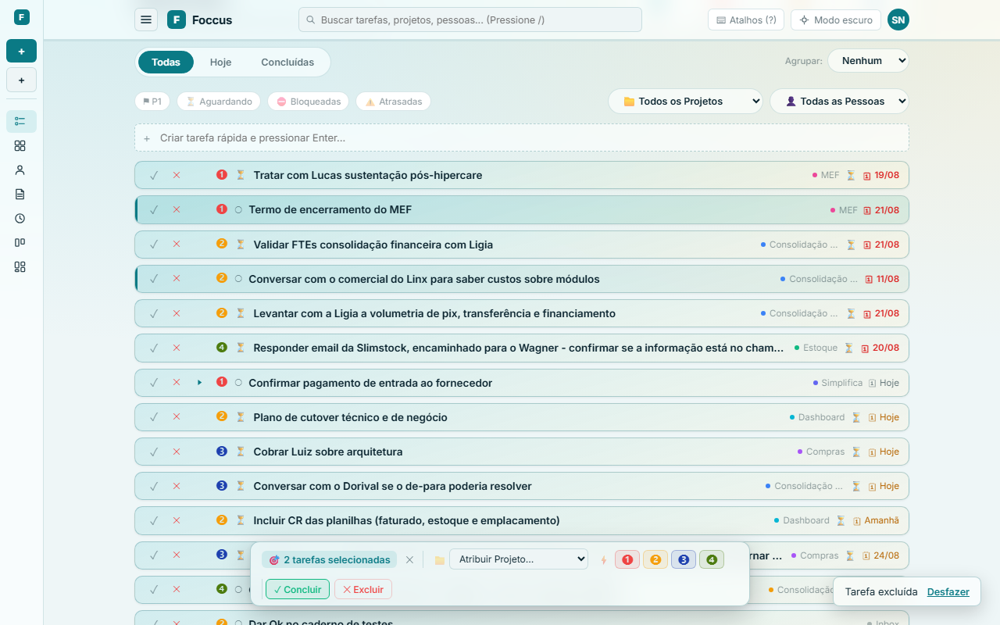
Duas tarefas selecionadas (destacadas com uma faixa colorida à esquerda) e a barra de ações no rodapé.
Nessa barra, da esquerda para a direita:
Clique na caixa de busca no topo da tela (com a lupa 🔍) ou aperte a tecla / do teclado em qualquer lugar do sistema — o cursor pula direto para ela. Digite qualquer palavra: o nome de uma tarefa, de um projeto ou de uma pessoa.
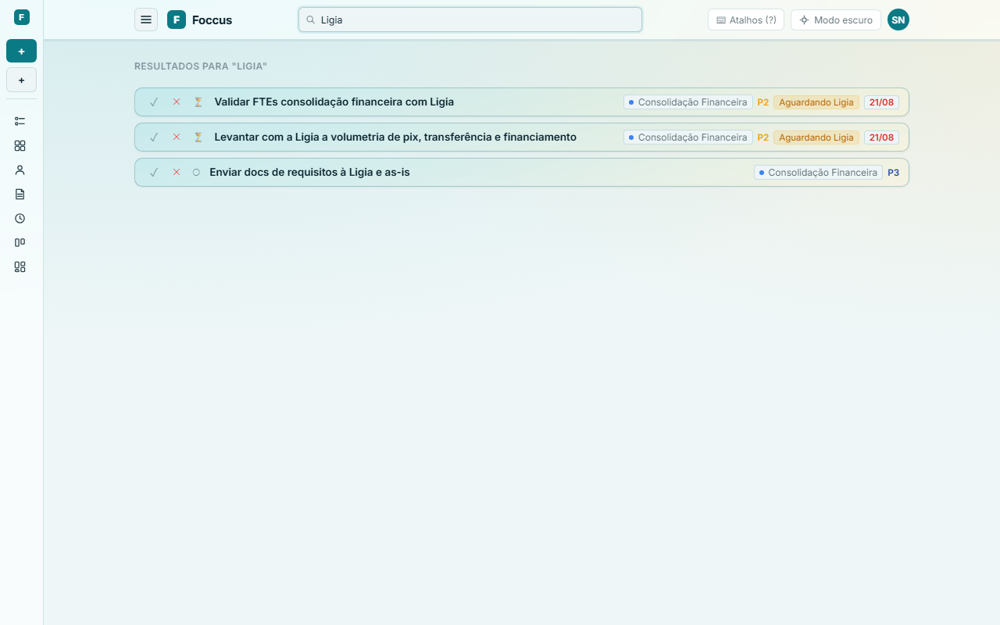
Buscando pelo nome "Ligia" — o sistema mostra todas as tarefas que mencionam ou estão ligadas a esse termo.
Os resultados aparecem na hora, substituindo a tela em que você estava, numa lista igual à de Minha Lista. Para sair da busca, apague o texto da caixa (ou apague tudo e aperte Esc).
Abra clicando em "Projetos" no menu lateral. Mostra um cartão para cada projeto que você tem cadastrado, em forma de grade.
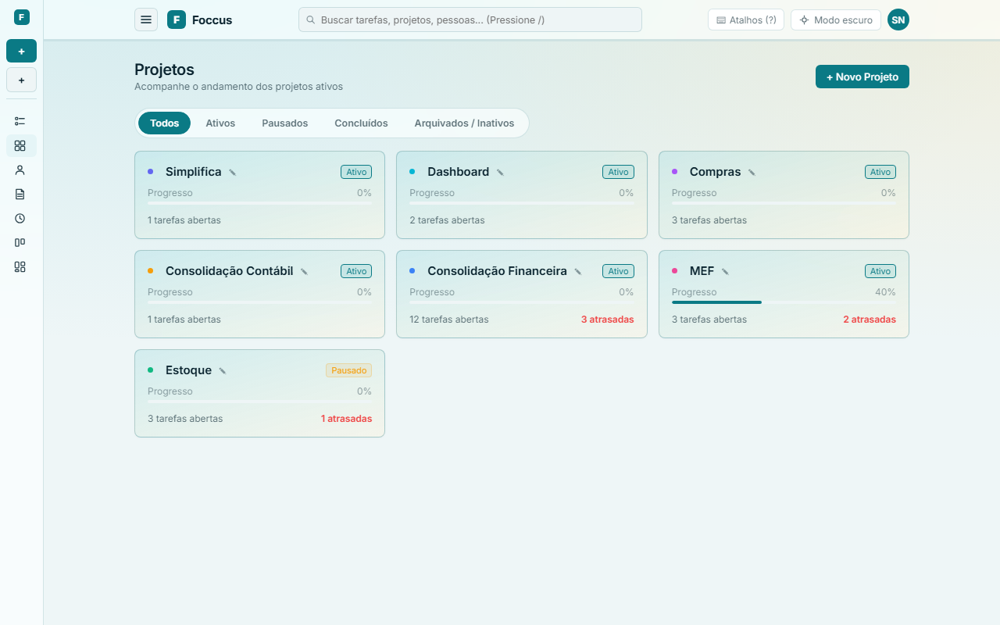
A tela Projetos — cada cartão resume um projeto.
No topo, as abas Todos, Ativos, Pausados, Concluídos e Arquivados / Inativos filtram quais projetos aparecem na grade abaixo.
Cada cartão mostra: o nome do projeto (com uma bolinha colorida identificando ele) e um lápis ✎ ao lado para renomear; uma etiqueta de status no canto (Ativo, Pausado, Concluído...); uma barra de progresso com a porcentagem concluída; e, embaixo, quantas tarefas em aberto o projeto tem — e, se houver, quantas estão atrasadas, em vermelho.
Clique em qualquer parte do cartão (fora do lápis) para abrir o detalhe daquele projeto.
Clique no botão "+ Novo Projeto" no canto superior direito da tela.
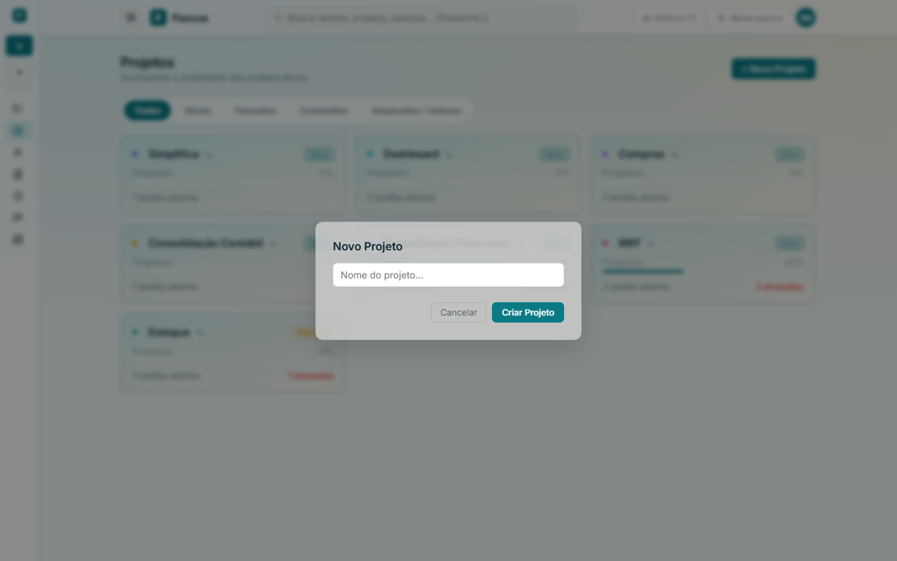
A janela Novo Projeto — só pede o nome.
Digite o nome e clique em "Criar Projeto".
Clicando em um cartão, você vê a lista de tarefas daquele projeto específico, junto com a barra de progresso geral:
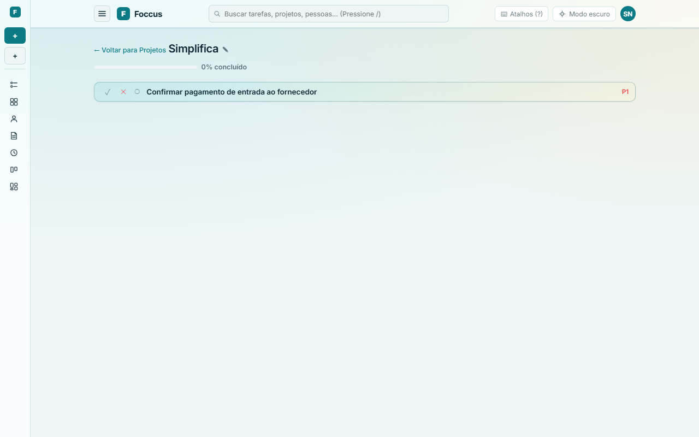
O detalhe do projeto "Simplifica" — mesma lógica de linha de tarefa da Minha Lista.
O link "← Voltar para Projetos", no canto superior esquerdo, leva de volta para a grade de cartões.
Clique no lápis ✎ ao lado do nome do projeto — tanto no cartão da grade quanto no título da tela de detalhe — para abrir esta janela:
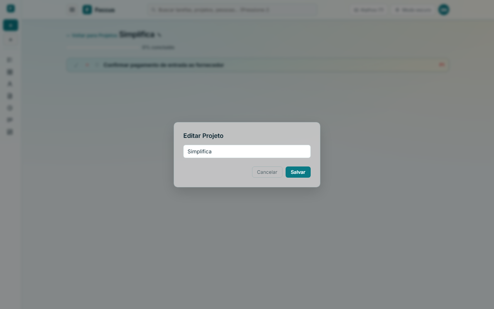
A janela de renomear, com o nome atual já preenchido.
Apague, digite o novo nome, e clique em "Salvar".
Abra clicando em "Pessoas" no menu lateral. É a lista de contatos que você relaciona às suas tarefas — principalmente para marcar de quem você está "aguardando" um retorno.
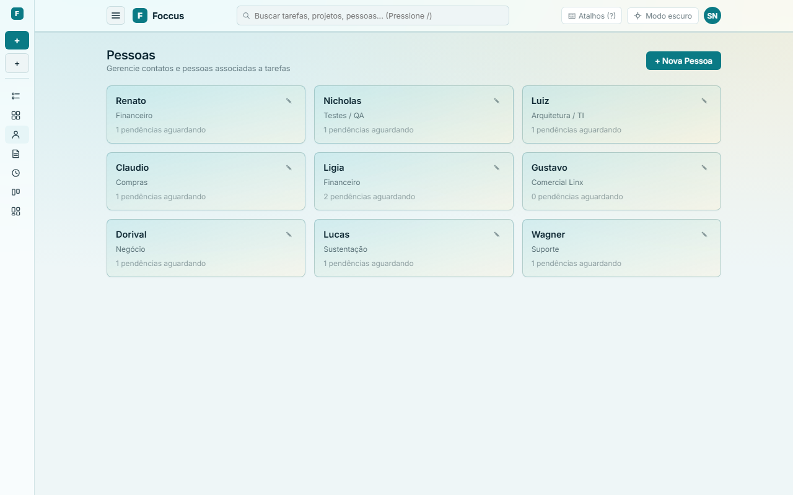
A tela Pessoas.
Cada cartão mostra o nome da pessoa, o cargo ou área dela (se você preencheu), e quantas pendências estão aguardando resposta dela no momento. Clique no lápis ✎ no canto do cartão para editar nome ou cargo.
Clique em "+ Nova Pessoa", no canto superior direito (esse mesmo botão também existe na barra lateral esquerda, com o menu expandido, para acesso rápido de qualquer tela).
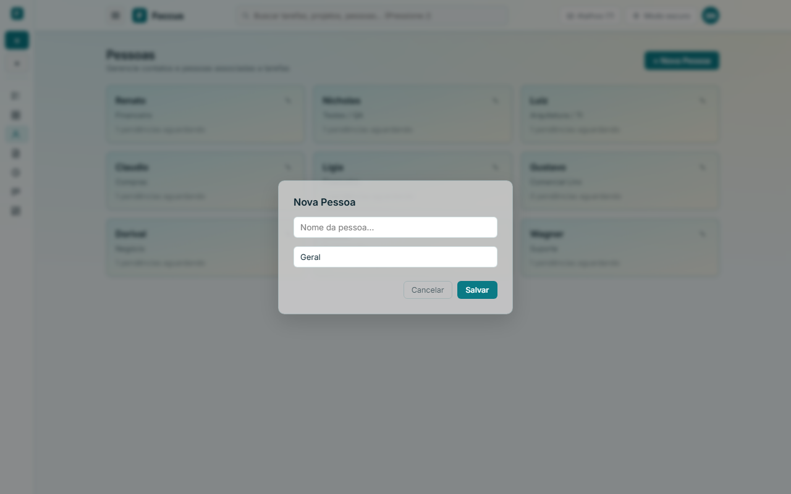
A janela Nova Pessoa.
Preencha o nome (obrigatório) e, se quiser, o cargo ou área (por exemplo "Financeiro", "TI") — esse segundo campo é opcional. Clique em "Salvar".
Abra clicando em "Anotações" no menu lateral. Serve para registrar o andamento de um projeto mesmo quando aquilo não é, formalmente, uma tarefa — um combinado, uma decisão tomada numa reunião, um aviso importante.
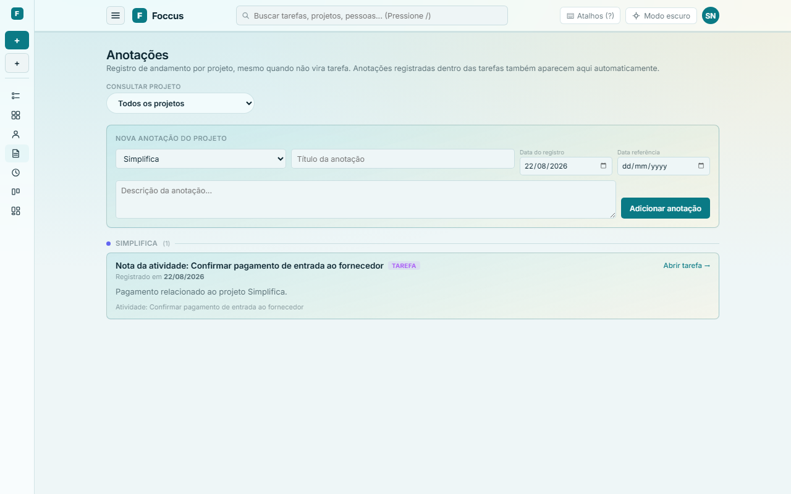
A tela Anotações.
No topo, a caixa "Consultar Projeto" filtra as anotações mostradas abaixo por um projeto específico (ou "Todos os projetos").
No bloco "Nova anotação do projeto", preencha:
Clique em "Adicionar anotação" para salvar. Ela aparece na lista abaixo, agrupada pelo nome do projeto.
Abra clicando em "Aguardando" no menu lateral. Reúne, num só lugar, todas as tarefas que estão travadas esperando alguém te dar um retorno — agrupadas pelo nome da pessoa.
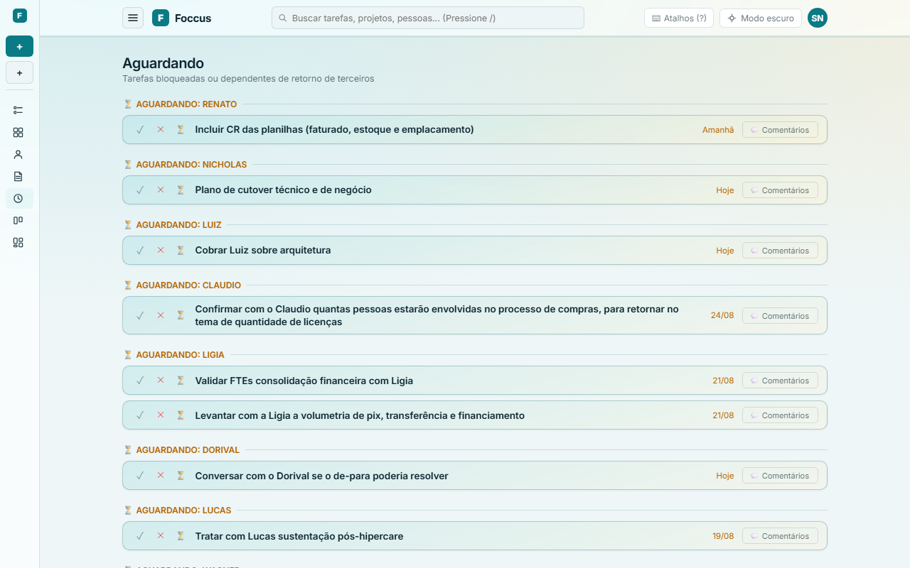
A tela Aguardando — um bloco para cada pessoa.
Uma tarefa aparece aqui automaticamente assim que você muda o Status dela para "Aguardando" no painel de detalhes (seção 6), e escolhe de quem está esperando resposta. Ela some da lista comum (Minha Lista) e passa a aparecer só aqui, junto com a data em que você espera essa resposta.
Cada linha tem um botão "💬 Comentários" à direita. Clicando nele, a linha se expande e mostra um pequeno histórico de conversa sobre aquele acompanhamento:
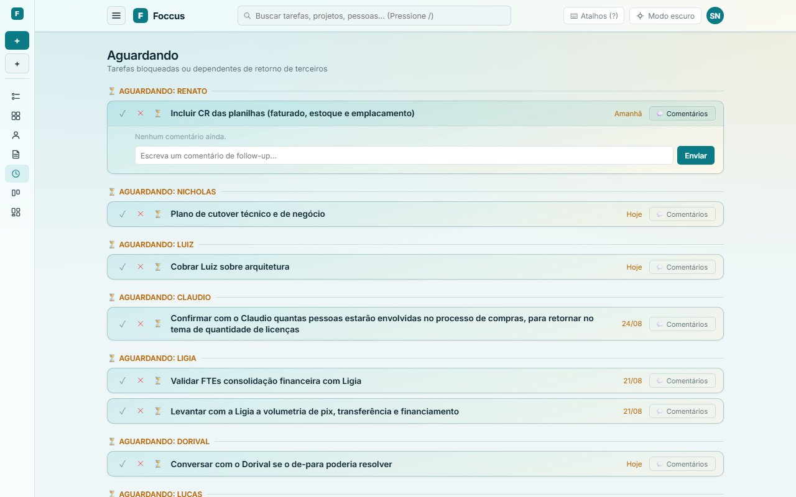
A área de comentários expandida — ainda sem nenhum comentário registrado nesta tarefa.
Digite na caixa "Escreva um comentário de follow-up..." e clique em "Enviar" (ou aperte Enter) para registrar. Cada comentário fica salvo com a data, formando um histórico de cobranças/respostas sobre aquele assunto.
Abra clicando em "Kanban" no menu lateral. Mostra as mesmas tarefas de sempre, só que organizadas em colunas — um jeito visual muito usado para acompanhar o fluxo de trabalho.
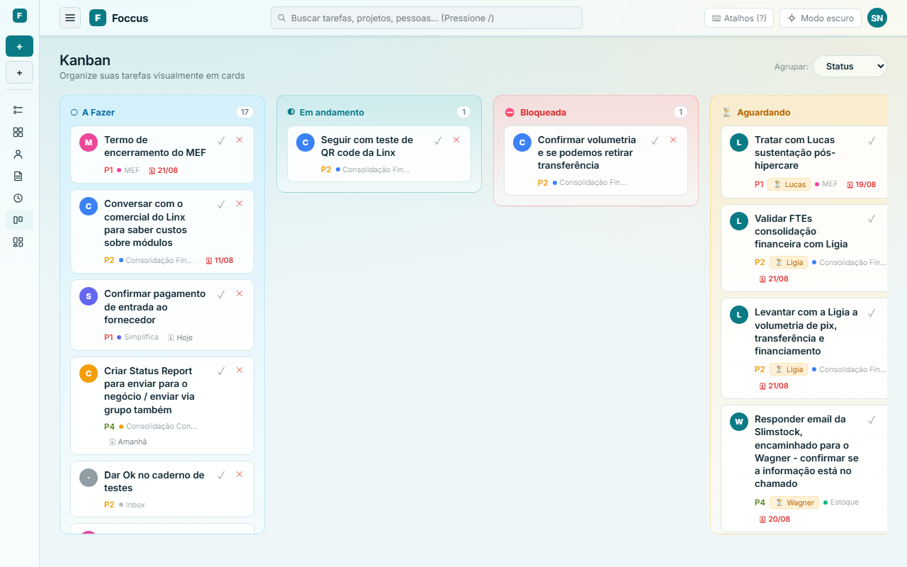
O Kanban, agrupado por Status (A Fazer, Em andamento, Bloqueada, Aguardando...).
Cada cartão mostra um círculo colorido com uma letra (a inicial da pessoa aguardada, ou do projeto), o título da tarefa, a prioridade, o projeto e o prazo.
Para mudar o status de uma tarefa, clique e segure o botão do mouse sobre o cartão, arraste até a coluna desejada, e solte — a tarefa muda automaticamente para o status daquela coluna.
No canto superior direito, a caixa "Agrupar" deixa escolher se as colunas representam Status, Projeto, Urgência ou Prazo — trocando essa opção, arrastar um cartão passa a mudar o projeto, a prioridade ou o prazo em vez do status, dependendo da escolha.
Clicar em qualquer parte do cartão (sem arrastar) abre o painel de detalhes completo da tarefa, igual explicado na seção 6.
Abra clicando em "Dashboard" no menu lateral. É a visão mais executiva do sistema — pensada para acompanhar o andamento de um projeto (ou de todos juntos) de forma visual, com gráficos.
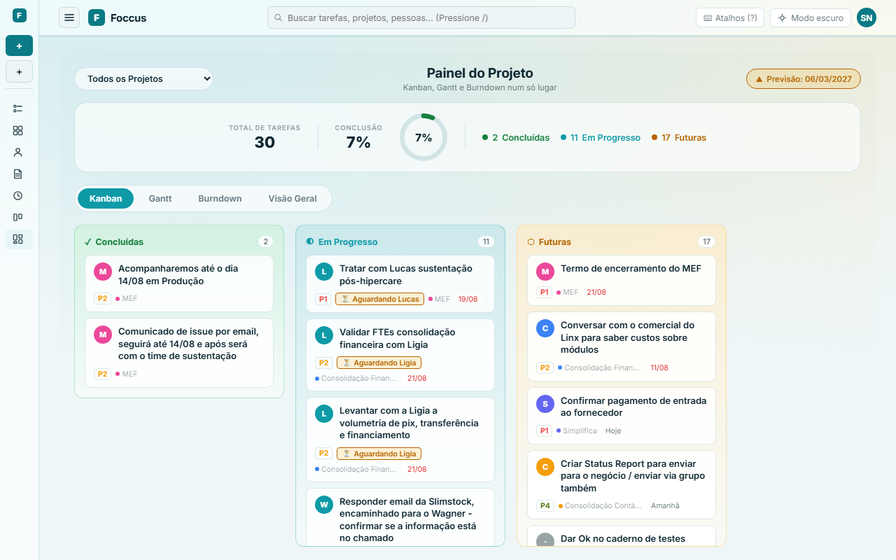
O Dashboard, no modo Kanban — o padrão ao abrir a tela.
No topo, a caixa à esquerda escolhe qual projeto está sendo analisado (ou "Todos os Projetos", pra ver a soma de tudo). No canto direito, uma etiqueta laranja mostra a previsão de conclusão calculada pelo sistema, com base no ritmo de conclusão de tarefas até agora.
Logo abaixo, a barra central mostra: o total de tarefas, a porcentagem de conclusão, um anel visual com essa mesma porcentagem, e a contagem de quantas tarefas estão Concluídas, Em Progresso e Futuras.
A pílula de botões Kanban / Gantt / Burndown / Visão Geral troca o que aparece abaixo da barra de estatísticas. Clique em qualquer um dos quatro nomes para trocar.
Três colunas fixas — Futuras, Em Progresso e Concluídas — com os cartões de tarefa daquele projeto, também arrastáveis entre colunas (igual à tela Kanban da seção 14, mas com só três agrupamentos fixos e visual mais executivo).
Um gráfico de barras horizontais, uma linha por tarefa, mostrando o período entre o início e o prazo de cada uma ao longo do tempo — útil para visualizar sobreposições e prazos apertados de uma vez.
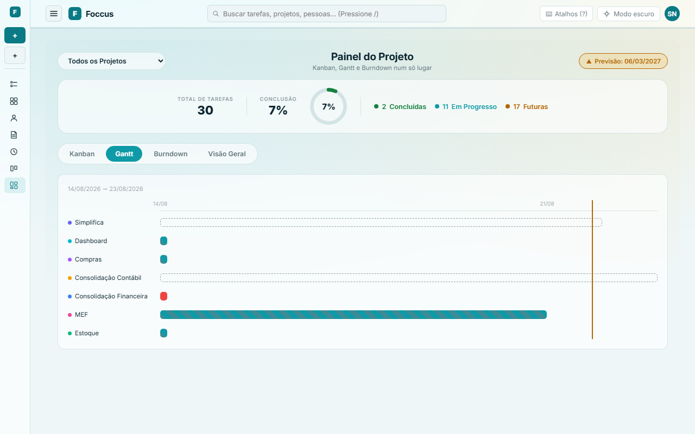
O modo Gantt — a linha vertical laranja marca o dia de hoje.
Um gráfico de barras mostrando quantas tarefas ainda restavam em aberto, semana a semana — comparando o ritmo Real (barra azul-esverdeada) com o ritmo Ideal (contorno tracejado) e a Previsão de quando o trabalho deve terminar.
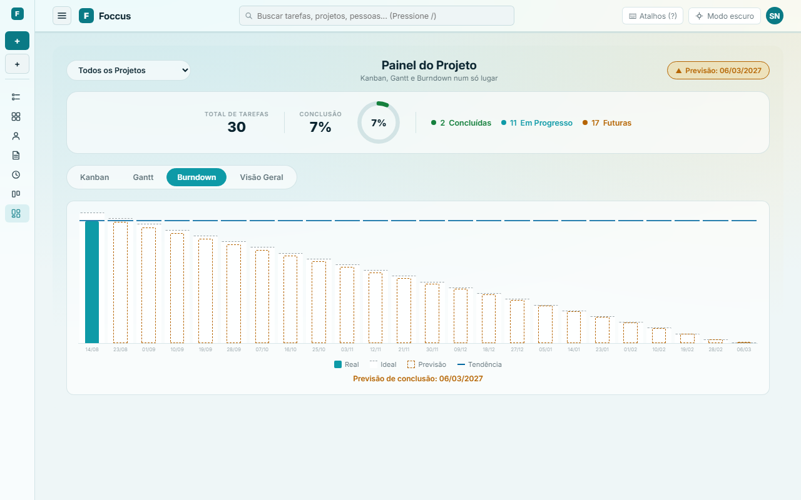
O modo Burndown, com a previsão de conclusão destacada em laranja embaixo do gráfico.
Três blocos empilhados: um gráfico de Velocidade (quantas tarefas você concluiu por semana, nas últimas semanas), um conjunto de anéis de Progresso por Projeto (um anel para cada projeto, comparando todos lado a lado) e um Mapa de Calor (uma tabela cruzando projetos com status, mostrando quantas tarefas de cada projeto estão em cada situação).
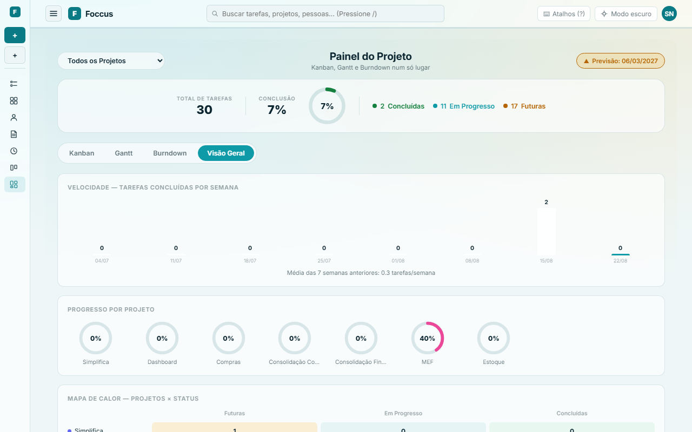
O modo Visão Geral — a visão mais ampla, comparando todos os projetos de uma vez.
Clique no botão "Modo claro" ou "Modo escuro" no cabeçalho, no canto superior direito (o texto do botão sempre mostra o modo para o qual você vai mudar, não o modo atual). A troca é instantânea, em toda a tela.
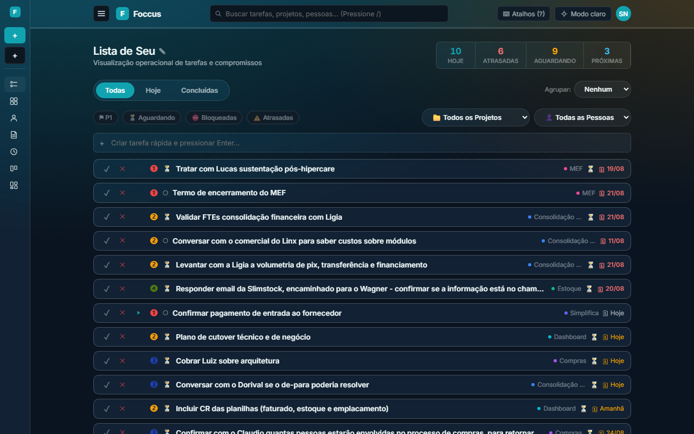
A mesma tela Minha Lista, agora no modo escuro.
A escolha fica salva automaticamente — da próxima vez que você abrir o Foccus nesse mesmo computador e navegador, ele já abre no modo que você escolheu por último.
Todos esses atalhos funcionam em qualquer lugar do sistema (menos, claro, se você estiver digitando dentro de uma caixa de texto no momento — nesse caso, o teclado escreve normalmente). A mesma lista também está disponível dentro do próprio sistema, clicando em "Atalhos (?)" no cabeçalho.
| Tecla | O que faz |
|---|---|
| / | Coloca o cursor na caixa de busca, pronta para digitar. |
| N | Abre a janela de criar uma nova tarefa. |
| Shift + clique | Seleciona um intervalo de tarefas de uma vez (da que você já tinha clicado até a nova). |
| Ctrl + clique | Adiciona ou remove uma tarefa da seleção múltipla, uma de cada vez. |
| Arraste do mouse | Clique numa área vazia e arraste para selecionar várias tarefas dentro de um retângulo. |
| Esc | Fecha qualquer janela aberta, ou limpa uma seleção múltipla ativa. |
| ? | Abre a janela de atalhos dentro do próprio sistema. |
Esta é a parte mais importante deste guia para quem nunca usou um sistema assim: o Foccus não tem servidor, não tem "nuvem", e não sincroniza nada automaticamente entre computadores.
localStorage. Isso tem consequências importantes:
Na prática, isso significa: use sempre o mesmo computador e o mesmo navegador para acessar o Foccus, e evite limpar os dados de navegação desse navegador sem saber o que está fazendo. Se precisar de um backup, procure a pessoa responsável pelo sistema — existe uma pasta versions/ no projeto com versões anteriores do arquivo, mas ela não guarda os dados que você digitou, só o funcionamento do sistema em si.
Este guia foi escrito para a versão 4.4.0 do Foccus (a versão aparece também no rodapé do menu lateral, com o menu expandido). Se o sistema for atualizado depois, pode ser que apareçam pequenas diferenças entre o que está escrito aqui e o que você vê na tela — a lógica geral de uso, porém, tende a continuar a mesma.